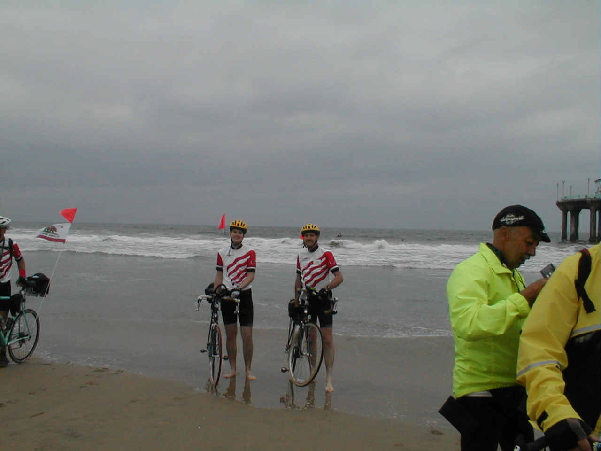

Day 1: May 13, Los Angeles, CA to Riverside, CAPrevious Day - Home - Next Day Photo of the DayDad and I dipping our wheels in the Pacific Ocean. On to Boston! Keegan's LogDay 1: May 13, Los Angeles, CA to Riverside, CA Mileage: 80.98 milesWeather: 61-79 degrees, Overcast in the morning, sunny in the afternoon Vertical Climb: 1800 feet Riding Time: 5.5 hours Today began early, our bags were dropped off at 5:45 and breakfast was at 6:00. By 7:00 we were off, as a whole group, for Manhattan Pier on the Pacific Ocean. After a short ride, we arrived for the festivities officially beginning the ride. We dipped our wheels in the Pacific Ocean and took a group photo on the pier. Afterward it was onward and upward (literally), we were off to Boston! The beginning of the ride was relatively flat, and combined with a small tail wind to give us a pace of 18-19 mph. Later in the day we got into the foothills of the San Bernardino mountains, though, and we ended up with about 1800 feet of climb. The day was almost perfect for riding though, and the distance was short compared to some of the rides in the near future. We stopped and had lunch with Donn and Keith at a nice little Mexican restaurant nestled into a valley. Tracy, the tour director, doesn't recommend spicy food while riding, but in the Southwest it's hard to avoid. As we were leaving the restaurant, we passed a small girl and her grandfather, the grandfather said to the girl "See, they're getting ready to go ride their bikes." The girl looked up, bewildered, and asked him "Why?!" I guess everyone on the ride would have their own answer to that one, something to think about... I've also noticed a lot of differences between this ride and a lot of the other rides I've done. The sags are 30 miles apart, not quite like the hilly. There's a lot more hills along the route than most rides in Indiana, but there is also a lot more tailwinds than headwinds to help you along. The pace is a lot faster than other rides I've done too, we spent the first 50 miles or so trucking along at almost 20 mph. The people are very friendly, but you can also feel a special bond because we're going to be together for another 7 weeks, and because we all share a common cause. We're going to Boston... Phil's LogI phoned the hotel desk last night and asked for a 5 AM wake-up call. The response, "5 AM, that's pretty early. Are you sure?" California.... Our bags were at the truck by 5:45, and we all rode in a caravan to Manhattan Beach pier. We left shoes and socks there, and shouldered our bicycles to the surf line, each dipped their back wheels, some their derailleurs. A group photo on the pier followed, it will be on our website soon as Keegan is hard at work on that. RIGHT off the pier was a huge hill, hard to get downshifted in time and I went clattering up it, my chain under too much tension to shift to my granny gear. Ugh! From there on, it was nice. 61 degrees at the start, cold, clammy skies prevailed. We wound our way through suburbs on roads that were pretty good for bicyclists. Light traffic too, and lots of kids were seen along the roadside hawking bunches of flowers to be given to moms. Donn, a native here, led a few of us to a Mexican restaurant that also serves as his turn-around on long training rides, good! A long portion of the ride to Riverside was down Victoria Avenue, a lovely boulevard with a wide center divider filled with palms and red flowering bushes. The sides were lined with estates and orange and grapefruit groves - most pleasant ride. We all rolled into the hotel after 81.3 miles feeling pretty chipper, if all of the days could be as easy as this it would be a pud ride. 79F (degrees Fahrenheit) at the end, and with sun and a really different climate!) Good catered dinner, then a walk to Ben & Jerry's, though Keegan and I were too full to imbibe. We are looking forward to a beautiful ride tomorrow, over a mountain then a long descent with strong tailwinds (we hope) into Palm Springs. On then to Indio and our lecture about safe and sane desert riding. Administrivia: It took a long time to get yesterday's newsletter sent, this Psion has to dial, some 38 numbers, plus commas for pauses, to access Iquest via my calling card. Keegan worked hard to accomplish it-especially since this British Psion (palmtop) isn't designed for our dialing conventions. But we have not gotten it to receive mail. Messages sent to phil_bike@mac.com will be safe waiting for us to access them, but we have not succeeded at that yet. And this little Psion keyboard requires a little more dexterity than I have, apparently, so I apologize for the inevitable typos. We hope all of you moms had a great Mother's Day. |
{kind=link}